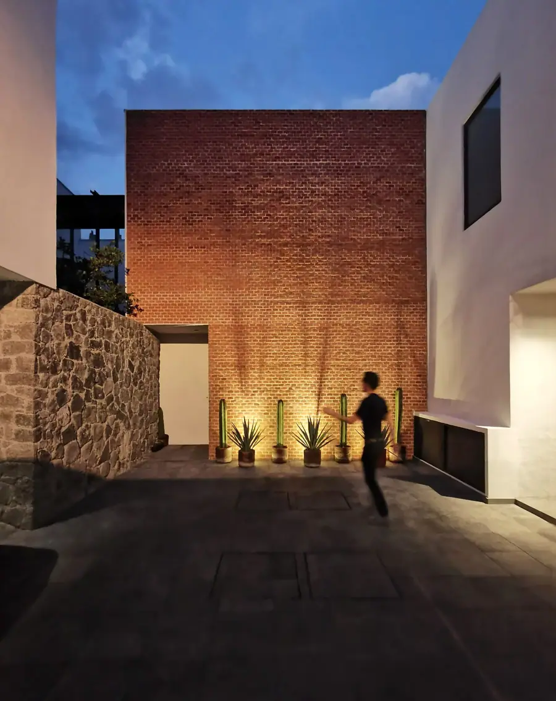
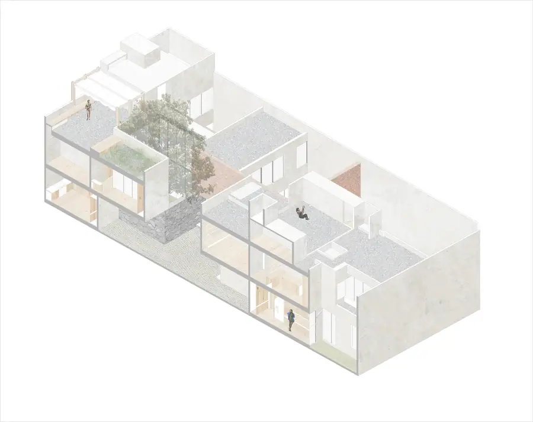

El despacho
Fundado en 2015, Mexa Arquitectos es un despacho de arquitectura e interiorismo con bases en la Ciudad de México y Mérida que busca soluciones innovadoras para todo tipo de proyectos.
- Fundado en
- 2015
- Bases
- Ciudad de México y Mérida
- Presencia
- Toda la República Mexicana


Lo que buscamos
A lo largo de nuestra trayectoria, nos hemos dedicado a crear atmósferas únicas que satisfacen las necesidades de cada uno de nuestros clientes.

Buscamos soluciones innovadoras para todo tipo de proyectos: casas, vivienda, oficinas, restaurantes y desarrollos inmobiliarios.
Cuidamos cada detalle en todas las etapas del proceso para lograr un resultado de la más alta calidad.
Cómo trabajamos: de la concepción del proyecto a la obra terminada
Proyecto
Trabajamos desde la concepción del proyecto y del programa arquitectónico.
Construcción
Hasta el término de la construcción.
Desarrollos inmobiliarios
O incluso hasta la promoción, venta y administración de desarrollos inmobiliarios.
Qué hacemos
- Arquitectura
- Concepción del proyecto y del programa arquitectónico.
- Interiorismo
- Atmósferas únicas que satisfacen las necesidades de cada cliente.
- Construcción
- Acompañamos la obra hasta su término, cuidando cada detalle en todas las etapas del proceso.
- Desarrollos inmobiliarios
- Promoción, venta y administración.
- Casa unifamiliar
- Edificio habitacional
- Oficinas
- Restaurante
- Vivienda social